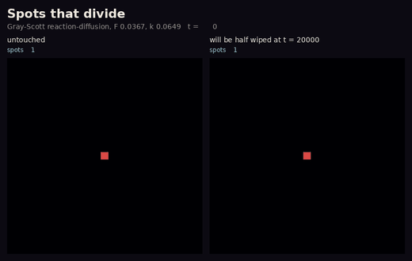
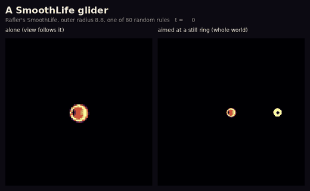
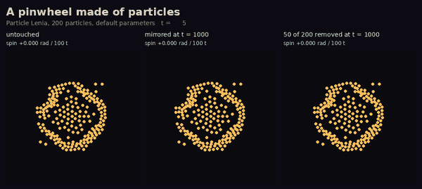

East wing · Other laws of physics · Room 11
Cousins from other models
Lenia has relatives. Reaction-diffusion chemistry is forty years older, SmoothLife is Game of Life made continuous, and Particle Lenia swaps the grid for free-moving particles. Each has life-like bodies of its own. We wrote each one from its paper and gave each animal one test.
Spots that divide

What you see. Spots stretch, pinch in two and push apart. After the wipe, the spots at the edge divide into the empty half.
What the ledger says. About 300 spots at the end, and the wiped world is back to the same count C066observed. Dividing spots are Pearson's discovery.
A SmoothLife glider

What you see. A bean that slides at a steady pace. When it meets the ring, the two merge into one body, which slides off in a new direction.
What the ledger says. It survives 1000 time units at three timesteps and at double resolution, but its speed changes with resolution C068observed, so the speed belongs to the grid, not to the animal.
A pinwheel made of particles

What you see. Scattered particles gather into a ring with spikes that turns like a pinwheel. Its mirror image turns the other way. With a quarter of its particles gone, it turns much more slowly.
What the ledger says. The spin is about the same in most seeds, but its direction is a coin toss that even the timestep can flip C067observed.